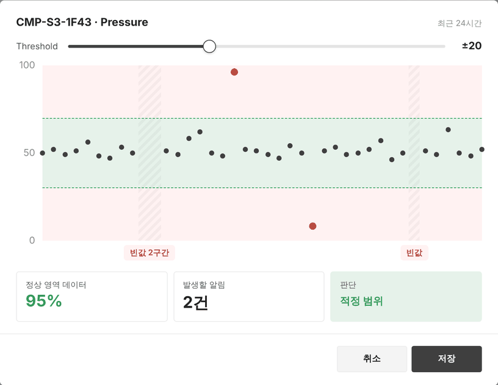
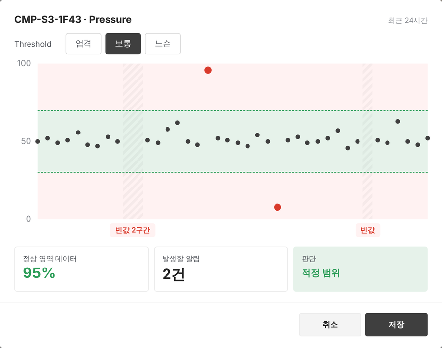
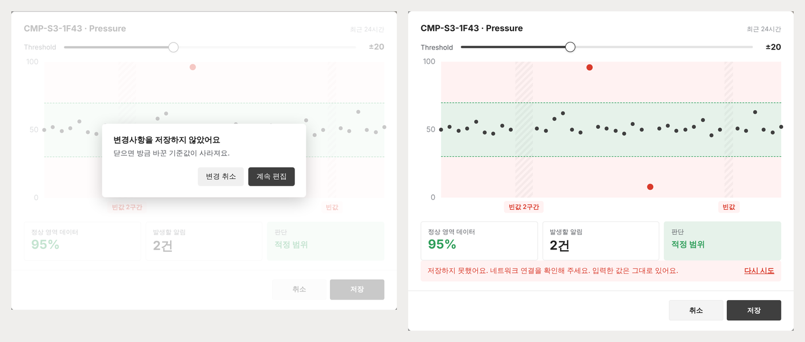

Real-time Equipment Monitoring Dashboard
A real-time equipment monitoring dashboard for manufacturing that turns scattered alerts into a single, prioritized workflow.

I designed Bee end to end, from user research to high-fidelity UI. Bee is a B2B equipment monitoring and notification platform sold to manufacturing companies including SK hynix. Working closely with PMs, engineers, and data analysts, I turned complex real-time equipment data into an interface that surfaces only the issues that need a human's attention.

Green means go. Yellow means look closer.
Never make anyone guess.
Operators spent more time finding the right information than acting on it.
Operators had access to all the data they needed, but not the clarity to understand what required attention first. Critical alerts were often buried among routine notifications, making quick decision-making increasingly difficult.
-
Hundreds of real-time alerts
Large volumes of notifications made it difficult to identify what truly required immediate attention. -
Difficult prioritization
Critical equipment issues were easily mixed with routine operational updates. -
Frequent context switching
Operators constantly moved between multiple screens before understanding the full situation.


How might we help operators spot the alerts that matter most, at a glance?
Show only what's relevant, so operators can cut through the noise and act faster.
Understanding how operators actually work.
Before exploring interface solutions, I focused on understanding how operators monitored equipment, responded to anomalies, and searched for information throughout their daily workflow. Through interviews, workflow analysis, and collaborative discussions with domain experts, several behavioral patterns consistently emerged.

Operators searched by task, not hierarchy.
Rather than navigating complex equipment trees, operators relied on search, recently viewed equipment, and production context to locate information quickly.
Not every alert deserved equal attention.
Users mentally separated notifications into critical, monitor, and ignore. Existing interfaces treated every alert equally, increasing cognitive load.
Context switching slowed response time.
Investigating a single anomaly often required opening multiple pages before enough context was available to make a decision.
Many alerts weren't real faults at all.
Missing or spiking sensor values triggered alerts just like real anomalies. Operators checked each one by hand, and many turned out to mean nothing. A large share of their effort went into alerts that never needed a human.

Four hypotheses guided the redesign of the monitoring experience.
I translated the research findings into four testable hypotheses that guided my design decisions before moving into wireframes and prototypes.
If critical alerts are surfaced before secondary information, operators will recognize urgent issues faster.
If monitoring and issue reporting happen in one continuous workflow, unnecessary navigation will decrease.
If equipment status can be understood at a glance, cognitive load during monitoring will be reduced.
If bad sensor data is filtered out before it becomes an alert, operators will spend less time on checks that never needed them.
Design Solution
Designing around workflows, not just data.
Instead of displaying every data point equally, I designed the dashboard around operator workflows: prioritizing critical information, cutting unnecessary navigation, and helping operators move from detection to action as quickly as possible.
Lists, not category trees.
Usability tests showed that operators didn't want to dig through a category tree to find equipment. So I replaced it with a simple list where they can pin priority items to the top or bottom and use contextual search to find what they need right away.

Prioritized, color-balanced cards.
I worked with data analysts to define which metrics mattered most and set a clear information hierarchy for each card. Status, MTBF, and uptime sit together in every card, and a balanced color system keeps the screen readable without feeling monotonous.

Record an issue the moment it happens.
I designed an anomaly input popup so operators can log an issue the moment it happens, without leaving the dashboard. Auto-suggestions pull in existing issue records or let them add new related data on the spot.

The real problem wasn't finding alerts. It was checking alerts that didn't matter.
Help operators spot the alerts that matter faster.
Stop bad data from becoming alerts, so there is less to check in the first place.
Interviews showed that speeding up each check would only help so much when many checks were pointless. So I added a per-equipment data-quality threshold. Operators decide how strict the filter is, and readings outside it no longer reach them as alerts.
Decide with the consequence in view.
Operators notice odd data while looking at the chart, so the setting opens from a settings icon on that same chart: one click, no trip to a settings menu. Inside, dragging the slider resizes a green "reliable" band over the last 24 hours of data. Points outside turn red, missing values are marked on the axis, and a summary shows how many alerts this setting would trigger. The result is visible before saving, not after the next alert.

One decision, three options.
The core choice was how operators set the threshold. I compared three directions on speed, control, and how soon the user sees the result.
- Gains
- Sees the result while adjusting; fast trial and error
- Costs
- Less suited to typing an exact value

- Gains
- Precise values
- Costs
- Result only after applying, so more attempts and guesswork

- Gains
- Fewest decisions
- Costs
- Ignores that each machine behaves differently
I also kept it a modal rather than a separate page or side panel. It's a short task on one machine: open, adjust, save, return. The chart inside the modal carries the context the operator needs.
Every state defined before build.
A threshold that silently fails to save is worse than none, so each state had an answer before engineering started.
| State | What the user sees |
|---|---|
| Missing values in the data | Marked on the axis and excluded from the alert count |
| Not enough data to suggest a range | Empty state explaining when the setting becomes available |
| Too strict or too loose | The verdict warns about too many alerts or missed spikes |
| Closing with unsaved changes | Choose to discard or keep editing |
| Save fails | Modal stays open with the value kept, inline error and retry |
| Applied to several machines, some fail | Lists which failed and why; retry only those |

Rebuilt with AI, judged by hand.
I rebuilt this flow in Claude Design on top of the existing product screen and its design system. The first output looked finished but missed the point, so most of the work was judging and correcting it.
- AI's first versionA generic "alert when health drops below X%" setting with number inputsWhat I changedRefocused it on data quality, and replaced inputs with the slider and live chart
- Saturated blue buttons and heavy, muddy chart colorsMatched the product's palette: soft tinted zones, strong color only for numbers and markers
- English modal inside a Korean product, and an extra mascotKorean copy matching the product, extra elements removed
- No unsaved-changes or save-failure statesAdded every state in the table above
The original screens are confidential. This flow is reconstructed from memory; data and numbers are illustrative.
Impact
Faster decisions, less digging.
By designing around operator workflows, I removed unnecessary steps between seeing an alert and acting on it. Critical data became easier to reach, and real-time alerts fit into one continuous flow, easing the daily cognitive load of triaging alerts.
What operators told us after rollout
Critical alerts stood out
“I can spot urgent issues without scanning every notification.”
Paraphrased from operator interviews
Less screen-hopping
“I just search or check my pinned list instead of digging through the tree.”
Paraphrased from operator interviews

Reflection
Removing steps mattered more than adding features.
Real-time monitoring tools succeed or fail by what they leave out. The fewer steps operators had between seeing an alert and acting on it, the faster they could decide. Next time, I'd set baseline metrics before launch so the impact could be measured, not just heard.